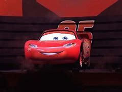

Exercício 6: apresentar a data em diversos formatos.
Exercício 7: apresenta três funções (botões) para trabalhar com
janelas.
Exercício 8: exibe uma caixa de mensagem na abertura do documento HTML
e, depois do usuário clicar no botão OK, a mesma rotina em JS imprime uma frase
na página HTML.
Esta linha foi escrita em HTML.
Exercício 9: apresenta o quadrado de um número já informado
internamente e, em seguida, em uma caixa de texto, permite que você informe um
número para saber seu valor ao cubo.
Exercício 10: imprime o nome atual da barra de título do browser.
Exercício 11: faz uma pergunta específica e apresenta algumas respostas
em forma de botões.
Exercício 12: cria 2 funções em JS que permitem somar ou multiplicar
valores informados em 3 caixas de texto.
Exercício 13: apresenta campos para preenchimento, sendo que alguns são obrigatórios.
Nota: os campos marcados com asterisco são obrigatórios.
Exercício 14: trocar figura passando o mouse.
Passe o mouse sobre a imagem:

1) Agora padronize os tamanhos das imagens.
2) Mude o evento para que as imagens sejam trocadas ao "clicar" com o mouse.
Exercício 15: saudações ao usuário.
Exercício 16: saudações ao usuário com figuras.
blablabla